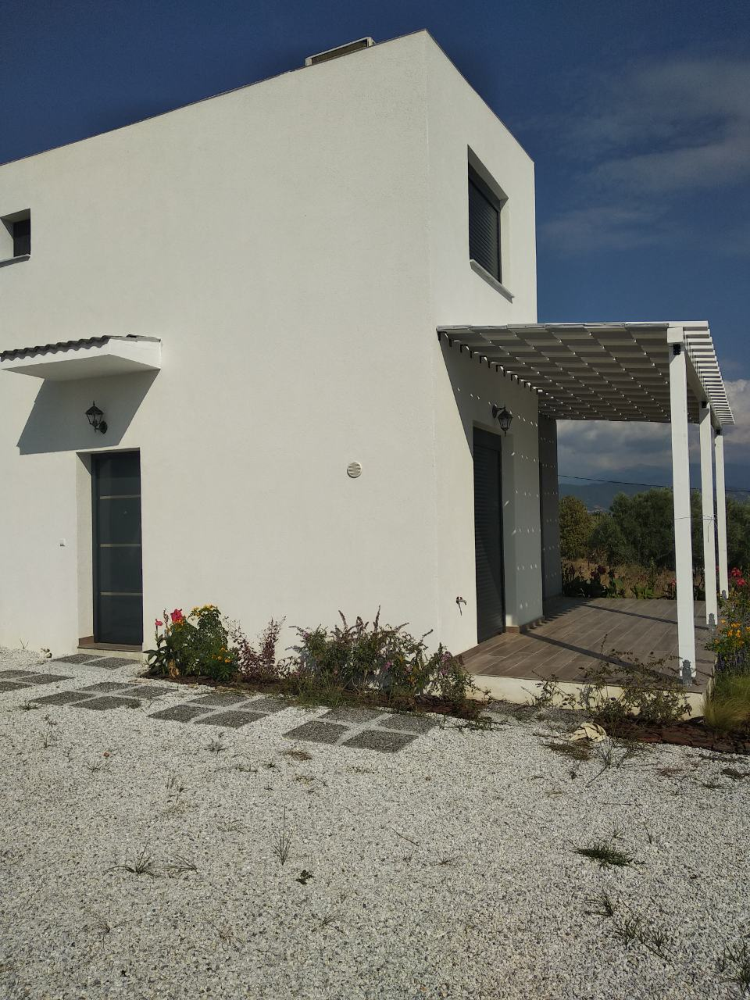

Направете почивката си незабравима с тишината и спокойствието на едно
невероятно кътче, наречено "Ocean View House",
далеч от големите, шумни и презастроени курорти.
"Ocean View House" е нова, с две спални, всекидневна и кухня,две бани с тоалетни,
веранда и голям озеленен двор. Напълно оборудвана, пълен кухненски сервиз
и обзавеждане, българска сателитна телевизия,
климатик, барбекю и др. С възможност за настаняване на до шест души
(вкл. деца).

Настаняването се извършва между 13:00 и 14:00 часа.
Любезните домакини ще Ви посрещнат и настанят,
след което ще Ви оставят да си почивате.
"Ocean View House" се намира на осем километра от Аспровалта,
в прелестите на китното крайбрежно селце наречено Сикия
. Неповторимо място за почитателите на
кристалната морска вода, обширната плажна ивица от ситен бял пясък
и любителите на морския и сладководен риболов. В него има сладкарница,
три минимаркета, кафенета и ресторанти, спортни игрища и детски площадки.